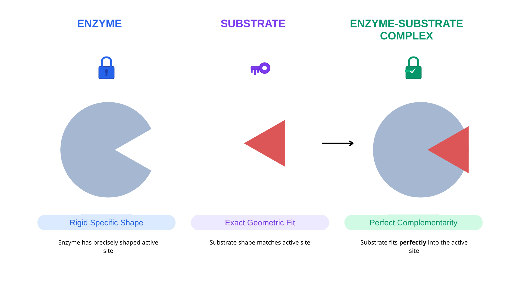
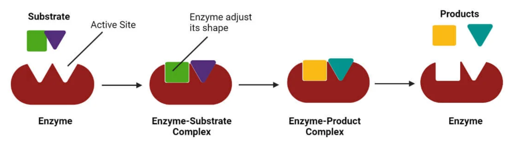
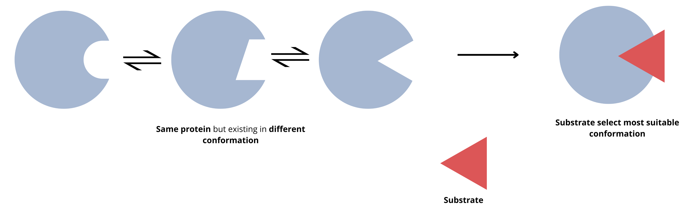
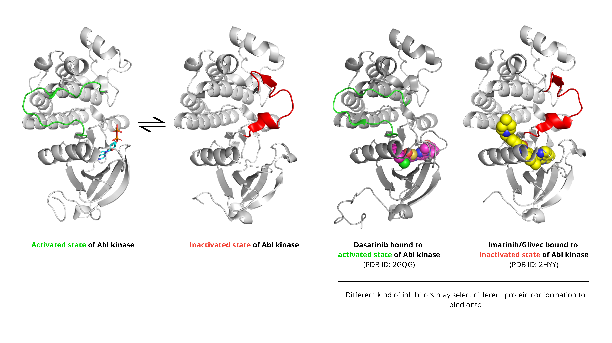

Chapter 1: Protein Flexibility and Conformational Changes#
1. Introduction#
Proteins are not rigid, static entities but are highly dynamic, existing as an ensemble of different shapes or “conformations.” This inherent flexibility is fundamental to their biological function. In drug discovery, understanding how proteins interact with small molecules is fundamental to designing effective therapeutics. For over a century, scientists have refined their understanding of protein-ligand interactions, moving from simple rigid models to appreciating the dynamic, flexible nature of proteins. This flexibility is not just a nuance—it’s central to how drugs work, why some fail, and how we can design better therapeutics.
2. Key Concepts and Definitions#
Protein Flexibility: The inherent ability of proteins to adopt multiple conformations through structural rearrangement, ranging from local side-chain rotations to large-scale domain movements.
Lock and Key Model: Emil Fischer’s 1894 hypothesis proposing that enzyme active sites are rigid, complementary structures that fit substrates like a key fits a lock.
Induced Fit: A model of ligand binding where the initial, weak interaction between a ligand and a protein induces a conformational change in the protein. This change creates a more complementary and tighter binding pocket.
Conformation: The specific three-dimensional arrangement of atoms in a protein. Proteins are flexible and can exist in an “ensemble” of different conformations.
Conformational Selection: A model of ligand binding where the ligand selects and stabilizes a specific, pre-existing conformation from the protein’s natural ensemble of shapes. This is crucial for designing drugs that target rare or inactive states, which can significantly enhance selectivity.
Conformational Ensemble: The collection of multiple structural states a protein samples over time, rather than existing in a single rigid structure.
Binding Pocket/Active Site: The region of a protein where ligands (including drugs) bind, which may change shape upon ligand interaction.
Ligand: Any molecule, such as a drug or a natural signaling molecule, that binds to a target protein.
3. Main Content#
3.1 The Lock and Key Model: Historical Foundation#
In 1894, Emil Fischer proposed that enzymes function like locks, with substrates acting as perfectly matched keys. This model suggested:
Proteins have rigid, pre-formed binding sites
Substrates fit into these sites through geometric complementarity
No structural change occurs upon binding
The lock and key model is simple and intuitive and explained why enzymes are selective for certain substrates.
But, this model cannot explain why some enzymes accept multiple substrates. It is an oversimplification of the dynamic nature of biological systems.

3.2 The Induced Fit Model: A Dynamic Perspective#
Later, Daniel Koshland Jr. challenged the lock and key model in 1958, proposing that:
Proteins are flexible, not rigid
Ligand binding induces conformational changes
The binding site molds around the ligand to optimize interactions
This creates a more complementary fit than the initial approach
He called it the induced-fit model.
Induced fit occurs through:
Rotation of amino acid side chains
Movement of flexible loop regions
Reorganization of hydrogen bonding networks
Domain movements and hinge motions

Image adapted from: source3.3 Modern Understanding: Conformational Selection and Dynamics#
However, later in 1990, Ruth Nussinove and her colleagues proposed the conformational selection model.
Proteins fluctuate between multiple conformations even without ligands
Different conformations have different affinities for ligands
Ligand binding shifts the equilibrium toward high-affinity states This explains how proteins can be “primed” for binding
Current evidence shows proteins exist as ensembles of conformations in solution:
Proteins constantly sample different structural states
Ligands can select and stabilize pre-existing conformations
Both conformational selection AND induced fit can occur
Timescales of Protein Motion Protein flexibility operates across multiple timescales:
Picoseconds-nanoseconds: Side-chain rotations, bond vibrations
Nanoseconds-microseconds: Loop movements, small domain motions
Microseconds-milliseconds: Large conformational changes, domain rearrangements
Seconds-minutes: Folding/unfolding events

3.4 Case Study: The ABL Kinase DFG Flip#
Here is an example illustrating how inhibitors of the Abl kinase bind to different conformations of the kinase.
Active state: In this state, the aspartate (Asp381 in ABL kinase) residue faces into the active site, preparing the enzyme for catalysis. This conformation is stabilized by Type I inhibitors. An example is ABL kinase bound to a small molecule inhibitor called Dasatinib (PDB ID: 2GQG).
Inactive state: In this state, the DFG motif flips, moving Asp381 out of the active site. This creates a new, adjacent allosteric pocket. This pocket is the target for Type II inhibitors like Imatinib, which lock the kinase in this inactive state. The structure of Imatinib bound to ABL kinase (PDB: 2HYY) perfectly illustrates this principle

4. Summary and Key Takeaways#
In this section, we’ve explored how our understanding of protein-ligand interactions has evolved from simple rigid models to appreciation of dynamic flexibility, fundamentally transforming modern drug discovery. We learned that the historical lock and key model, while foundational, has given way to the induced fit model and ultimately to our current understanding of proteins as conformational ensembles that exist in multiple structural states.
Proteins are dynamic molecules that exist as ensembles of multiple conformations, not as single rigid structures captured in crystal forms.
The lock and key model introduced molecular specificity but failed to account for conformational changes, while the induced fit model recognized that proteins reshape themselves upon ligand binding to optimize interactions.
Modern drug discovery embraces conformational selection, where ligands stabilize pre-existing protein conformations, alongside induced fit mechanisms—both often occurring together during binding events.
Protein flexibility operates across multiple timescales (picoseconds to seconds) and spatial scales (side-chain rotations to large domain movements), all of which can impact drug binding.